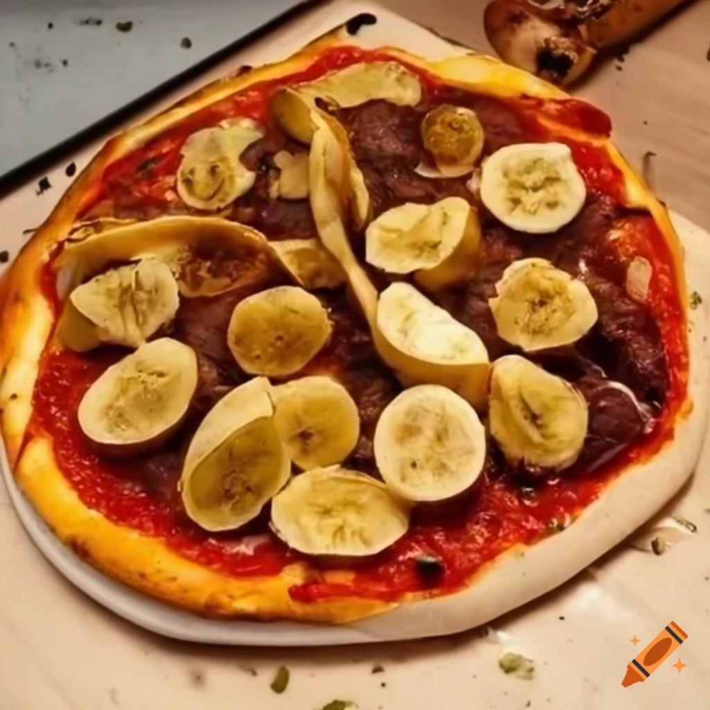

Banana Peel Pizza

Description
Prepare to challenge pizza norms with this unconventional creation. Start with a classic pizza crust and spread a layer of tomato sauce. Then, sprinkle a generous amount of shredded cheese on top. But here's the twist: instead of traditional toppings, arrange banana peels on the pizza in a visually striking pattern. Bake until the crust is golden and the cheese is melted.
Ingredients
- 1 pizza crust
- 1 cup tomato sauce
- 1 cup shredded cheese
- 2 banana peels
Steps
- Preheat the oven according to the pizza crust instructions.
- Spread tomato sauce evenly over the crust and sprinkle shredded cheese on top
- Arrange banana peels in a decorative pattern on the pizza.
- Bake the pizza until the crust is golden and the cheese is melted.